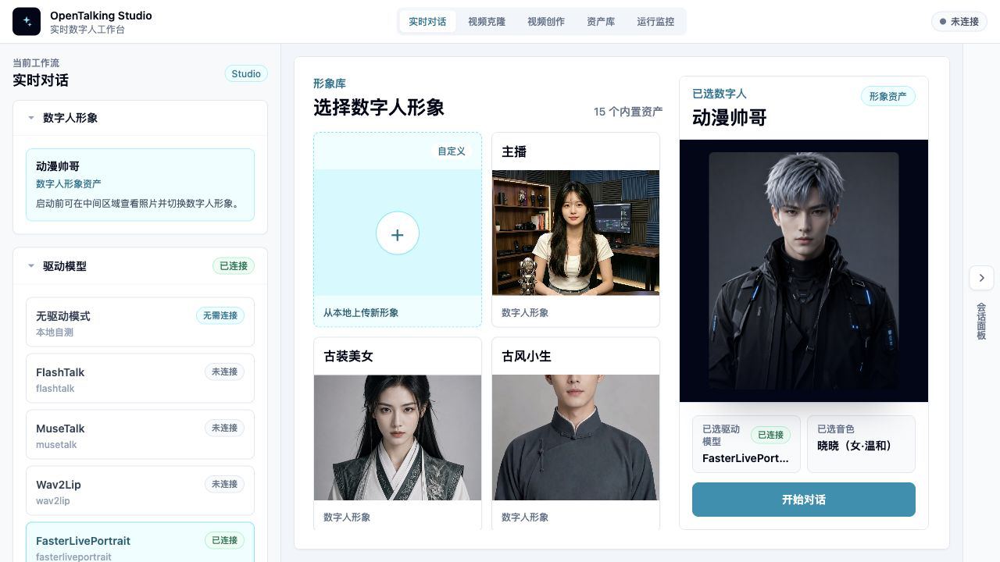
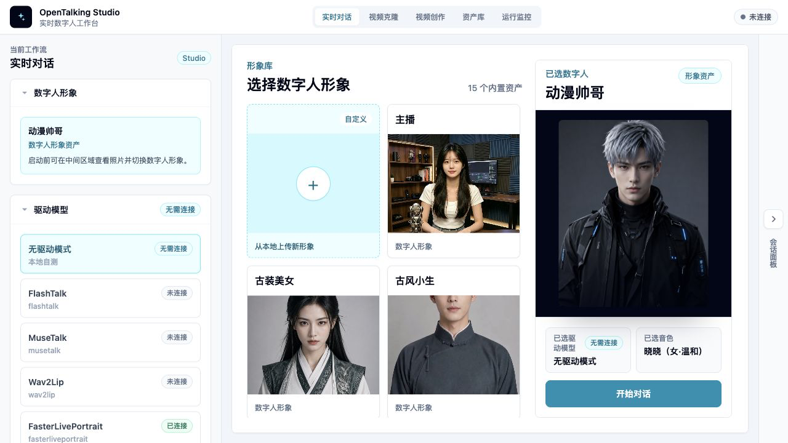

WebUI 基础使用¶
WebUI 是 OpenTalking 的交互式工作台，用于完成 Avatar 选择、模型选择、音色配置和对话验证。它适合快速确认链路是否正常，也适合让非工程同学预览数字人效果。
WebUI 用来做什么¶
你可以在 WebUI 中完成这些操作：
- 从形象库选择内置或自定义 Avatar。
- 选择当前会话要使用的模型。
- 选择 TTS Provider 和音色。
- 输入文本或使用语音进行对话。
- 查看连接状态、会话状态和错误提示。
WebUI 不是生产后台，也不是完整的资产管理系统。它更像一个可视化调试和体验入口。
打开 WebUI¶
通过快速启动脚本启动服务：
脚本完成后会输出 WebUI 地址，默认是：
如果你修改了端口，以终端输出为准。

页面组成¶
顶部工作流¶
顶部导航用于切换不同工作流。常用入口包括“实时对话”和“视频克隆”：
- “实时对话”用于 LLM / TTS / STT 参与的数字人会话。
- “视频克隆”用于 FasterLivePortrait 视频驱动，摄像头或上传视频只作为 driving 输入。
视频克隆的详细操作见视频克隆。
Avatar 选择¶
Avatar 选择区展示当前可用的数字人形象。每个 Avatar 通常包含预览图、名称和类型标识。自定义 Avatar 会带有“自定义形象”标识，并支持删除。
如果没有看到预期 Avatar，先确认它所在目录是否位于 OPENTALKING_AVATARS_DIR 下，并且包含合法的 manifest.json 和预览图。
模型选择¶
模型选择用于决定当前会话使用哪一个数字人驱动模型。Mock 模式下可以选择无真实推理的模式；本地或 OmniRT 模式下，需要确保模型权重、后端服务和启动参数已经准备好。
模型能力和后端选择的详细说明会放在模型支持中。
音色选择¶
音色选择用于决定数字人回复时使用的 TTS Provider 和 voice。不同 Provider 的音色标识、鉴权方式和延迟表现可能不同。
如果只是跑通流程，可以先使用默认音色；需要更自然或更贴近业务角色时，再进入音色与 TTS配置。
会话区¶
会话区用于输入文本、查看回复、播放数字人输出。开启语音能力时，浏览器会请求麦克风权限。
如果你只是验证模型链路，建议先用短文本开始，确认首帧、音频和字幕正常后，再测试长文本或连续语音。
状态与错误提示¶
WebUI 会展示服务连接、会话创建、模型调用和 TTS 调用相关错误。遇到问题时，先看页面提示，再到终端查看 API / WebUI 日志。
第一次使用流程¶
1. 选择 Avatar¶
进入页面后，先从形象库选择一个 Avatar。建议第一次使用内置 Avatar，这样可以排除自定义素材问题。
2. 选择模型¶
选择与启动方式匹配的模型。例如：
- Mock 模式：选择 mock / driverless 相关选项。
- 本地 QuickTalk：选择
quicktalk。 - OmniRT 后端：选择启动参数中指定的模型。
3. 选择音色¶
使用默认音色即可开始验证。如果配置了多个 Provider，可以先试听，再选择当前会话使用的音色。
4. 创建会话¶
确认 Avatar、模型和音色后创建会话。会话创建成功后，页面会进入可对话状态。
5. 允许麦克风权限¶
如果要使用语音输入，浏览器会弹出麦克风授权。只使用文字输入时，可以先跳过语音权限。
6. 开始对话¶
输入一句短文本，例如：
确认回复、音频和数字人画面都正常后，再测试更复杂的输入。

常用操作¶
切换 Avatar¶
切换 Avatar 后，建议重新创建会话。不同 Avatar 的素材格式、参考图和模型适配情况可能不同，旧会话不一定能复用。
切换模型¶
切换模型前，确认当前启动后端支持该模型。如果后端没有准备好，创建会话时可能返回模型不可用或推理连接失败。
切换音色¶
切换音色会影响后续回复的 TTS 输出。已经生成的回复不会重新合成。
查看字幕与事件¶
页面会展示对话文本、回复文本和部分状态事件。需要更详细的后端事件时，可以查看 API 日志或后续参考资料中的事件说明。
停止或重建会话¶
当模型卡住、音频中断或配置切换后表现异常时，优先停止当前会话并重新创建。必要时使用：
停止服务后重新启动。
常见问题¶
页面空白或资源加载失败¶
确认 WebUI dev server 是否仍在运行，并检查终端是否有前端编译错误。
创建会话失败¶
先确认 API 在线：
再检查模型后端是否与 WebUI 中选择的模型一致。
没有声音¶
检查浏览器是否静音、TTS Provider 是否配置成功、音色是否可用。如果使用云端 TTS，还需要确认 Key 和网络访问。
麦克风不可用¶
检查浏览器权限、系统麦克风权限和当前页面是否通过 localhost / 127.0.0.1 打开。部分浏览器对非安全来源的音频权限有额外限制。